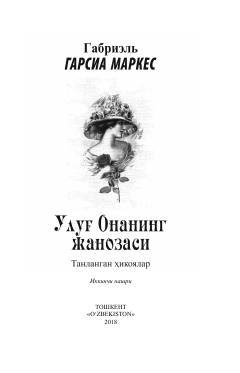

УОGabriel García Márquezning teran mazmunli va mahorat bilan bitilgan sara hikoyalari to'plami.
Ushbu тўпламда жаҳонга машҳур ёзувчи, Нобель мукофоти соҳиби Габриэль Гарсиа Маркеснинг фусункор реализм руҳидаги энг сара ҳикоялари жамланган. Асарларда инсон тақдири, ёлғизлик ва зўравонликка қарши кураш мавзулари чуқур бадиий таҳлил қилинган. Жумладан, номдош ҳикояда жамият инқирози ва адолатсизлик ўткир деталларда очиб берилган.